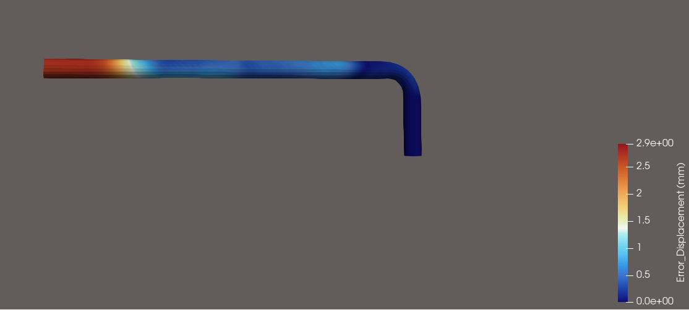
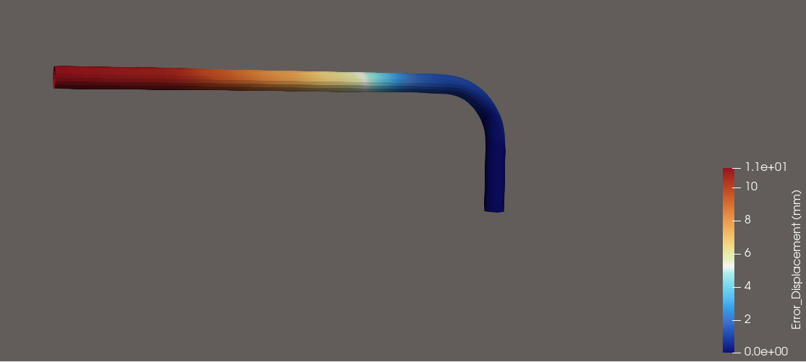
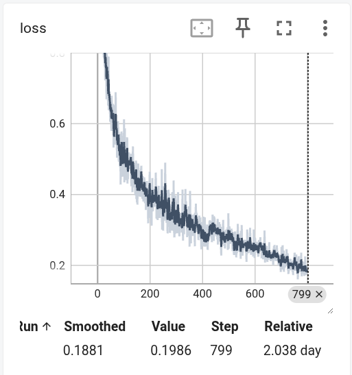
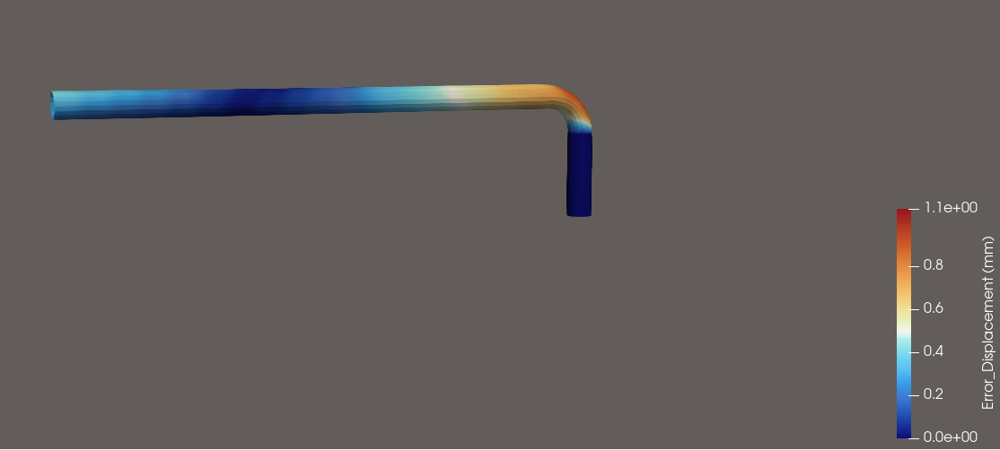
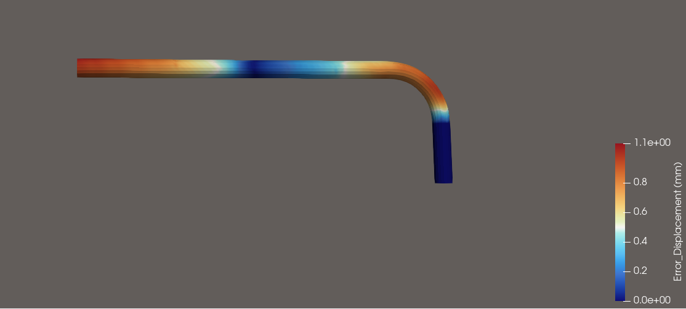
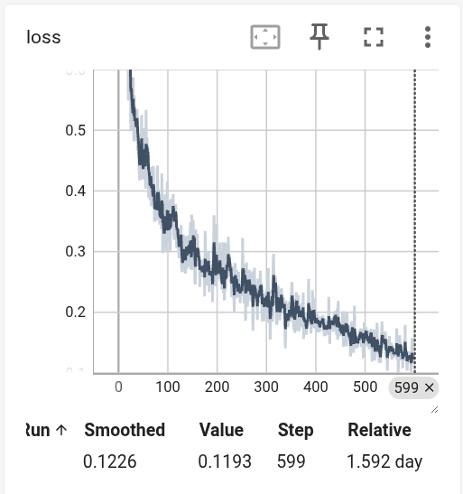
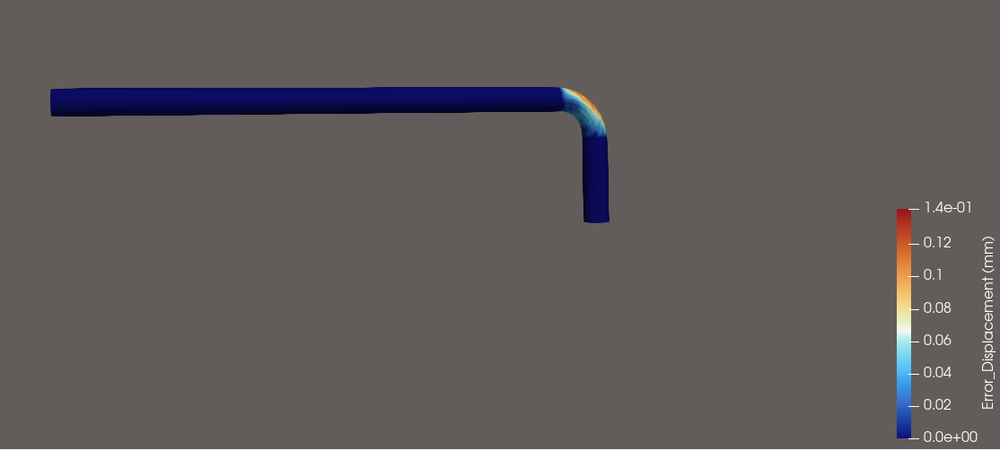
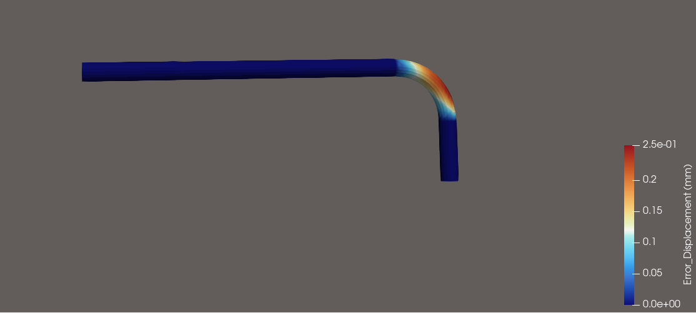
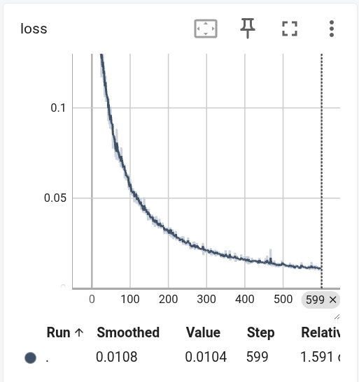

技术总结#
1 MeshGraphNets (MGN) 核心思路#
MGN 是 DeepMind 提出的一种用于模拟复杂物理系统的图神经网络架构，核心思想“将连续的介质（如流体或固体）离散化为图网络拓扑，通过节点间的局部消息传递，来隐式地求解复杂的物理相互作用。”。
它包含三个核心组件（Encode-Process-Decode 范式）：
Encoder（编码器 - 升维提取）： 它将物理空间中的网格节点特征（如节点的三维坐标、历史速度、节点类型等）和连边特征（如节点间的相对距离、相对位移）映射到一个高维的隐空间（Latent Space）。在隐空间中，神经网络更容易捕捉非线性的物理关系。
Processor（处理器 - 隐式求解）： 这是 MGN 的“大脑”。通过多层 Message Passing（消息传递），相邻的节点开始交换信息。这里它实际上在学习什么？ 传统 CAE 是通过刚度矩阵来传递力，而 Processor 是在通过数据驱动的方式，学习如何用多层感知机（MLP）去近似空间偏微分方程（PDE）的微分算子。它在学习“节点 A 移动了，应该给相连的节点 B 施加多大的拉力或推力”。
Decoder（解码器 - 降维输出）： 将高维隐特征重新映射回三维物理空间，输出当前时间步下，每个节点应该产生的加速度或速度变化量。最后，通过半隐式欧拉积分等数值方法，更新节点位置，完成时空推演（Rollout）。
模型表现与效果，在理想状态下，原生 MGN 展现出了极具诱惑力的优势：
极速推理： 一旦训练完成，它的推演速度比传统基于有限元的 Abaqus/Ansys 等工业软件快几个数量级。
长序列动画生成： 它可以像自回归模型（类似于 ChatGPT 生成文本那样，用上一步预测下一步）一样，连续推演几十甚至上百个时间步，生成流畅的物理动画。
原生 MGN 的局限性： 原生 MGN 是纯数据驱动的，它只知道“点在这个位置，按照历史惯性该往哪飞”，它不理解什么是管径、什么是厚度，更不知道什么是胡克定律。因此，面对复杂弯管的泛化时，极易崩溃。
2 算法架构演进#
V1：基线：沿用了 DeepMind 原版 MeshGraphNets 的标准配置。在这个阶段，每个图节点的输入特征极其贫乏，仅为一个 4 维向量：[节点类型, X, Y, Z三维坐标]。但缺乏局部参考系： 对于网络而言，外壁的节点和内壁的节点除了绝对坐标不同，没有任何区别。网络无法感知“当前处于一个外径为 \(D\)、壁厚为 \(t\) 的管子上”。流于表面的插值： 在同分布测试中，它能勉强拟合。但一旦进入分布外（OOD）泛化测试——由于特征维度过低，网络无法建立边界刚度矩阵的概念，导致推演中频繁出现体积坍缩、网格严重穿透，甚至在几十步推演后彻底发散崩溃。
V2：特征工程 —— 几何感知的核心 (7 维物理)： 为了打破 V1 的几何盲区，进行了一次大胆的特征工程重构。将节点的输入特征从 4 维强行扩充到了 7 维。我们计算并注入了：绝对管径 (\(Radius\))： 让网络拥有宏观尺寸的先验知识。截面横纵向距离 (\(dist\_A, dist\_B\))：这相当于为每个节点建立了一个随动的局部极坐标系。网络终于能区分“我是处于容易起皱的内凹面，还是容易变薄的外凸面”。加上这 3 个几何特征后，网络发生了质的飞跃。在没有任何力学公式约束的情况下，仅仅依靠高维数据表征，网络就能在长达 90 步的时空推演中，完美复刻出极度平滑、无穿透的弯管动画！但是深层残留隐患： 几何上的完美掩盖了物理上的失真。当提取 V2 预测的微观应力云图时，发现了大量的不合理应力。应力分布极其噪点化，同一点的应变极小，但预测应力却高达几百兆帕——这严重违反了连续介质力学的本构定律。V2 证明了我们在数据表征上的巨大成功，但也暴露了纯黑盒模型的上限：它学会了“画”出一个弯管，但它不懂物理。
V3：算力重分配 —— 欧拉动态空间注意力机制： 弯管成形是一个在空间上极度不均匀的物理过程。为了解决这个问题，提出了 Eulerian Spatial Attention（欧拉空间注意力机制）。因为模具在空间中的位置是固定的（弯曲点永远在 \(Z \le 0\)）。因此我们的注意力机制不绑定在随波逐流的材料点上，而是锚定在绝对空间坐标上。直管段（\(Z > 0\)）： 这里只发生刚体平移。在早期版本中，为了让网络不关注这里，给它赋了 \(0.01\) 的极低权重。但结果导致了高频的数值震荡。在最终版中，我们将直管段的 Loss 权重死死锁定为 \(1.0\)。这在网络中相当于施加了一个强有力的刚性边界条件约束，消灭了虚假应变。弯曲核心区（\(Z \le 0\)）： 这里发生着横截面畸变、壁厚减薄、内侧起皱等极端非线性大变形。我们将其 Loss 权重提升至 \(2.0\)，强迫神经网络的优化器把宝贵的梯度算力全部倾注在这一区域。改写 Loss 函数的拓扑权重，让 AI 的注意力与工程力学的难点对齐。
V4：第一性原理约束 (PINN)： 在V3稳固的几何地基上，引入了双线性弹塑性本构物理约束。让网络不仅要“拟合数据”，更要“服从真理”。在图网络的消息传递过程中，我们提取相邻节点间的距离变化率（预测应变 \(\epsilon\)），代入材料的真实弹性模量 (\(E\))、屈服应力 (\(\sigma_y\)) 和切线模量 (\(E_t\))，计算出理论应力 (\(\sigma_{theory}\))，并用它去惩罚网络预测的应力。
归一化物理空间降维：真实的弹性模量高达 \(10^5\) 兆帕级，而神经网络的归一化隐特征在 \([-1, 1]\) 之间。直接计算 Loss 会引发灾难级的梯度爆炸。我放弃了用魔法数字（如乘以 \(1e-5\)）去硬凑，而是将算出的真实物理应力，利用数据集的全局均值和方差，反向缩小回归一化空间，在这个纯净的无量纲空间内进行 MSE 计算。这保证了所有梯度始终在完美的数量级内流动。
物理法则预热机制：PINN 极其难以收敛！在训练初期（Epoch 0），网络连管子的基本形状都猜不对，算出的应变全是垃圾。拿着垃圾去强加物理约束，会导致极其剧烈的梯度撕裂。所以提出“先学几何，再受物理约束”的动态策略。前 100 轮，物理 Loss 权重从 \(0\) 缓慢线性增长到 \(1.0\)。这允许网络先专心拟合出一个粗略的流形面，随后让物理法则入场，精细化消灭掉所有的幽灵应力。V4 打通“几何表征 + 数据驱动 + 第一性原理”的闭环，实现了从黑盒插值向微观动力学推理跨越。
3 结果分析#
v1#
{kind=link}

Fig. 8 IID测试-位移误差#
{kind=link}

Fig. 9 OOD测试-位移误差#
{kind=link}

Fig. 10 loss曲线#
v2#
{kind=link}

Fig. 11 IID测试-位移误差#
{kind=link}

Fig. 12 OOD测试-位移误差#
{kind=link}

Fig. 13 loss曲线#
v3#
{kind=link}

Fig. 14 IID测试-位移误差#
{kind=link}

Fig. 15 OOD测试-位移误差#
{kind=link}

Fig. 16 loss曲线#
4 后续计划#
1.等待v4版本训练完成，观察应力误差
2.泛化测试1，重新仿真三组与训练集差别较大的弯管，观察预测精度
3.泛化测试2，弯曲一块板，用训练出来的权重去预测，观察预测精度